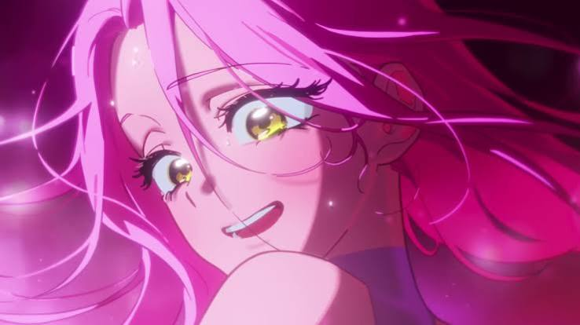

"My god, my universe!"
Por: Kenzi
R O U N D 1 - "My Clematis"
O round inicia com as participantes Mizi e Sua, com a música "My clematis", uma música que fala sobre uma flor que nasceu de um abismo, uma escuridão. Ambas cantam ao mesmo tempo que a animação apresenta sua história, principalmente sobre a infância das duas garotas em um lugar que chamam de "Anakt Garden". O clipe mostra a vida de ambas antes dessa grande competição, falando muito sobre o relacionamento delas. O round encerra logo ao fim da música, com o placar de "87/86". Sua, a perdedora, foi eliminada ao perder por 1 ponto para sua amada Mizi.